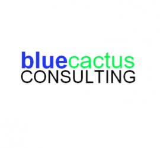

The Institute for Life Science Entrepreneurship (ILSE) is an integrated research facility and network that will accelerate life sciences innovation in medicine, devices and other technologies to improve human health. ILSE identifies and attracts scientific innovators, entrepreneurs, investors and business leaders and bring them together in a manner unique to our region to foster and develop entrepreneurs.

Blue Cactus Consulting focuses on improving its clients’ operational efficiencies, identifying market opportunities, and maximizing value from technology and strategic advantages. We work with technology based companies, mostly in life sciences, and assist with business strategy and technology commercialization – monetizing technologies.
 CapGenic is a company dedicated to helping clients succeed in the marketplace. We excel in merger and acquisition intermediation, corporate development, alliance building and capital formation guidance with a focus on analysis, formulation, refinement, and implementation of successful business strategies. Our team of consultants—all of whom are highly qualified and possess extensive experience—act as business strategists and financial advisors to our select clients.
CapGenic is a company dedicated to helping clients succeed in the marketplace. We excel in merger and acquisition intermediation, corporate development, alliance building and capital formation guidance with a focus on analysis, formulation, refinement, and implementation of successful business strategies. Our team of consultants—all of whom are highly qualified and possess extensive experience—act as business strategists and financial advisors to our select clients.
The Life Sciences Practice at Pryor Cashman has more than 30 years of experience addressing the challenges facing entrepreneurs and early-stage businesses in this industry, as well as counseling many established, start-up and mid-stage companies. As a result of our long-standing relationships with leaders in the commercial and academic sectors of the life sciences community, we are intimately familiar with the many considerations that drive our clients’ decisions and are known for our quick-thinking and creative handling of complex challenges, our continuous accessibility, our practicality and our cost-sensible solutions.
BakerHostetler, one of the nation’s largest law firms, represents clients around the globe. Our lawyers litigate cases and resolve disputes that potentially threaten clients’ competitiveness, navigate the laws and regulations that shape the global economy, and help clients develop and close deals that fuel their strategic growth. Our firm was founded on three core principles: to develop and sustain mutually beneficial, long-term relationships with each of its clients; to provide timely, responsive, and high quality legal services; and to be generous with both time and money to the communities where we work.
Our team has launched or relaunched several ethical pharmaceutical products, managed corporate communications for dozens of small companies and has overseen scientific communications activities for countless more. We have more than a decade of proven experience in managing relationships with advocacy groups, research institutions, investigators and patients in order to ensure mindshare in the media and professional arena. We would welcome the opportunity to earn your trust and deliver you the best service in the industry.
McCarter & English, LLP is a firm of over 400 lawyers with offices in Boston, Hartford, Stamford, New York City, Newark, Philadelphia and Wilmington. Clients come first at McCarter & English. Our job is to listen to our clients, stay on top of the frequent changes that can affect their goals, and implement the strategies that will lead to success. We are honored to be the chosen law firm of clients ranging from Fortune 100 companies to mid-market and emerging growth companies to individual people. When our clients do great things, we are pleased to get the assist.
Wilson Sonsini Goodrich & Rosati is the premier legal advisor to technology, life sciences, and other growth enterprises worldwide. The firm’s broad range of services and practice areas are focused on addressing the principal challenges faced by the management, boards of directors, shareholders, and in-house counsel of our clients. We also know that today’s enterprises are facing unprecedented changes in the business, regulatory, and global landscapes, and we have the knowledge and experience to help them confidently adapt to such challenges with state-of-the-art solutions.
©2017 - First Pitch life science
Designed by Bonnie Quach